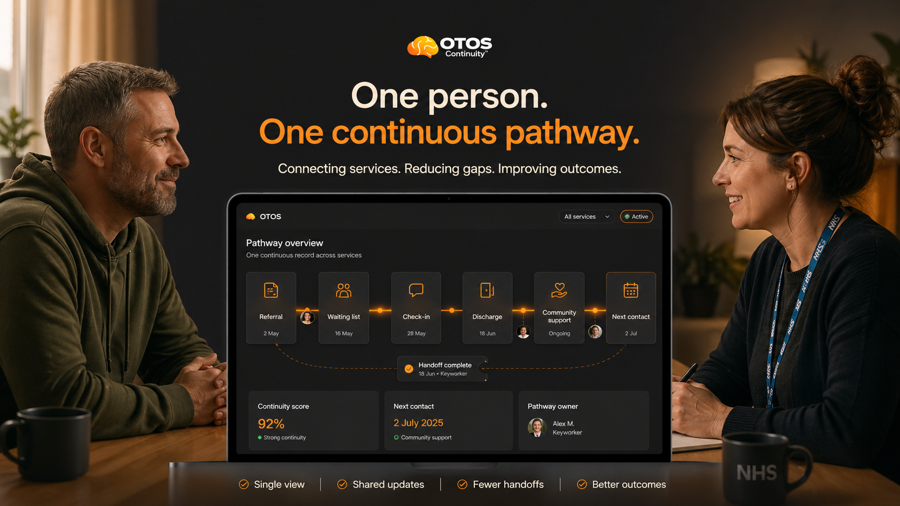

ADHD prevalence across addiction treatment cohorts.Royal College of Psychiatrists
Private partner briefing
When ADHD is left waiting,
23–45%
61.3%
30.2% vs 7.0%
86%
800–900

When ADHD is left waiting,
addiction steps in.
And it doesn't come quietly.
A targeted ADHD + addiction continuity intervention: 12 weeks, 50 people, adults already visible to services — where unresolved ADHD may be a hidden driver of repeat addiction and crisis.
Improvement in addictive-disorder outcomes after ADHD diagnosis and treatment.START study, France 2025
Trial-end abstinence in ADHD + cocaine dependence.JAMA Psychiatry, 2015
Alcohol users also have mental health problems.Sun Network public figure
Estimated local Cambridge & Peterborough overlap cohort.Local cohort estimate
Sources for every figure: Evidence & Sources →
You have a page written specifically for your service
Choose your route.
Choose your route.
Read your invite.
The failure is not in the care — it is in the space between it.
OTOS is not a new service — it's the thread that stops people getting lost between the ones that already exist. It keeps the service user held and in contact automatically, surfacing early drift signals so a keyworker can step in before it becomes relapse, A&E or another expensive escalation. Each page below is written for your specific role and includes a draft note you can edit and send back to Dean.
For the team seeing crisis at the bedside, where the next handoff needs to be visible before discharge.
For recovery and aftercare teams holding the thread after intake, relapse, rehab or silence.
For the ADHD service carrying waiting-list pressure while people drift before assessment.

For community holding support that keeps people connected while clinical routes catch up.


For the referral and assessment route: visible, receipted, bounded and separate from diagnosis or prescribing.
For community, work and therapy support where recovery starts to hold after crisis.
Cambridgeshire County Council / public health lead? Open the Local Authority briefing →
Why this exists
I was your patient.
I was your patient.
I built the fix.
35 years of successful self-medication. Crossed the invisible line. Six A&E presentations. Three detoxes at Addenbrooke's. Private hospitals, a DayHab, CPFT mental health services and CGL funded £90,000 of residential rehab with my ADHD medication removed on arrival.
Then a private diagnosis. Three days on Elvanse. Everything made sense. The chaos wasn't a character defect. The addiction wasn't a failure of treatment. It was what happens when the underlying neurological condition stays unresolved while the system treats the visible damage.
OTOS is the thread that should have held between the services I moved through.
Read the full story →
"Next time we meet, I won't be your patient. I'll be your partner."
The evidence in three facts
Sources, claims register and caveats: Evidence & Sources →
61.3%
Improvement in addictive disorders after ADHD diagnosis and treatment. START study, France 2025. This is the comparator the pre-pilot is designed to test locally.
23–45%
Of people in addiction treatment have undiagnosed ADHD. Royal College of Psychiatrists. In the CPFT footprint: an estimated 800–900 adults in this overlap.
£90k = £91k
Cost comparison — order of magnitude. Three-month residential rehab for one person costs roughly what a 12-week OTOS pre-pilot costs for 50. This is the cost-redirection question the pilot is designed to answer.
What OTOS will never do
- ✕Diagnose, prescribe or make any clinical decision
- ✕Replace, access or write back to any EPR system
- ✕Create a new clinical record or share identifiable data
- ✕Automate any decision that should have a human in it
- ✕Commit you to a full rollout by joining a scoping call
The bounded ask
50 people. 12 weeks. Cambridge & Peterborough.
- Nominate one named contact.
- Join one 30-minute scoping conversation.
- Help confirm where suitable people are already visible to services.
- Optionally send Dean a short support note for the pilot pack.
"OTOS surfaces signals. Your team makes the decisions."
How it works
Four steps. One connected pathway.
OTOS holds the continuity thread across services so each partner can see the relevant continuity status — not another service's clinical notes.
01 — Identify
People already visible
Adults already touching addiction, recovery, crisis, hospital, GP, ADHD or community support — where co-occurring ADHD may be clinically relevant.
02 — Connect
The next step is named
The next appropriate route is named: ADHD assessment, Right to Choose, CPFT, GP, recovery or community support. The referral is logged and visible.
03 — Co-ordinate
Thread stays visible
The continuity thread shows whether the next step landed, stalled or needs human review. No extra clinical record is shared between services.
04 — Sustain
Drift becomes visible
Surfaces early drift signals for human review, so a keyworker can re-engage someone before it becomes relapse, A&E, detox or another expensive escalation.
What it looks like in practice
The overview a commissioner sees at Week 7.
Real pilot data structure. Anonymous threads. No identifying details. 89% continuity held. 94% handoff receipt rate.

The next step is not a commitment or any kind of purchase decision. It is a partner conversation to see what's possible.